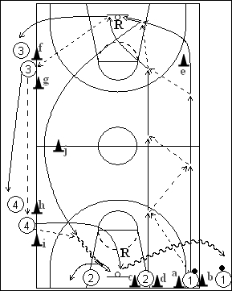

Catégorie : FASTBREAK (Fb-009)
Déroulement
- Deux files de joueurs à une baseline, une avec ballons entre les cônes a et b, et une entre les cônes c et d. Une troisième et une quatrième files à l’opposé du terrain, à hauteur des lignes de lancers-francs (3 entre les cônes f et g et 4 entre les cônes h et i).
- Les premiers joueurs des files 1 et 2 procèdent en passes de contre-attaque jusqu’au lay-up de 1, qui a contourné le cône e. Ce même joueur 1 démarre aussitôt pour un lay-up à l’opposé en passant derrière le cône j. Le premier joueur de la file 2 effectue le premier rebond et la passe de dégagement au premier joueur de la file 3, qui prolonge vers le premier de la file 4, qui fait alors la dernière passe à 1. La paire suivante commence quand le premier lay-up des précédents a été réalisé.
- Après cet exercice, 1, après son deuxième lay-up, va dans la file 2; 2, après son premier rebond, va en 3; 3 avance en 4 et 4 réalise le deuxième rebond et va dans la file 1.
Coaching points
- Le tout doit être réalisé sur un rythme très élevé car beaucoup d’éléments de la contre-attaque y sont travaillés.